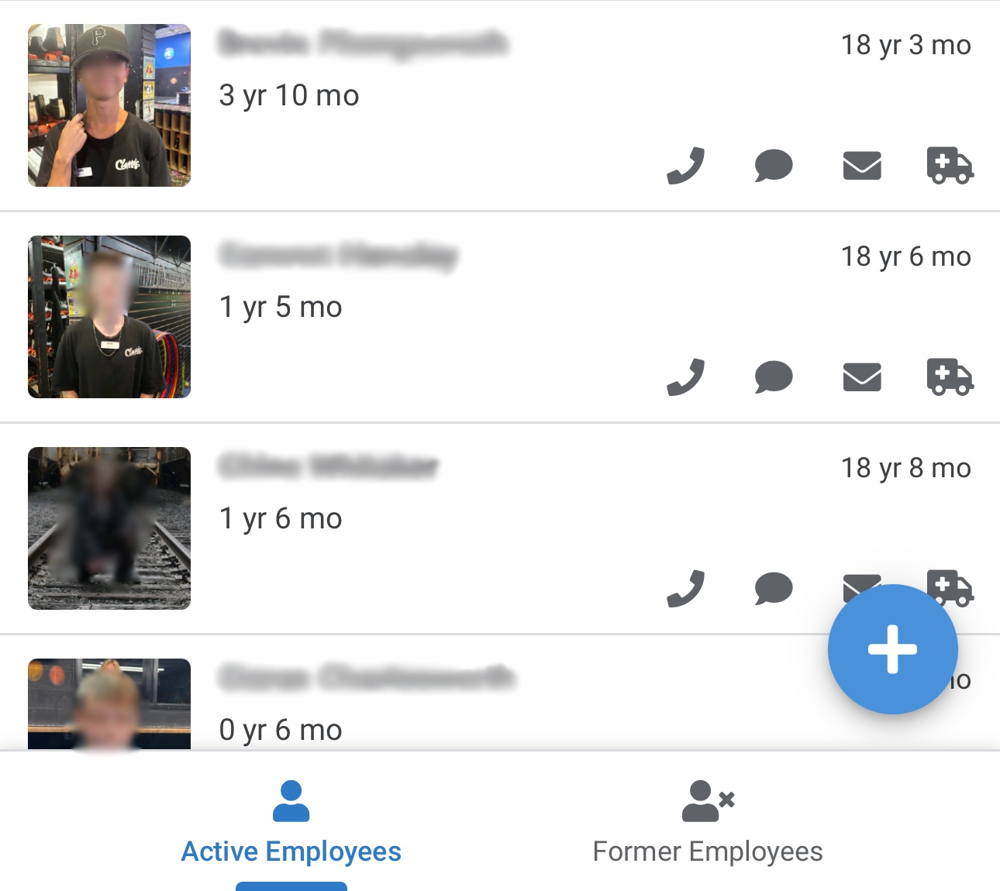
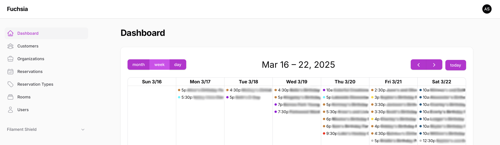
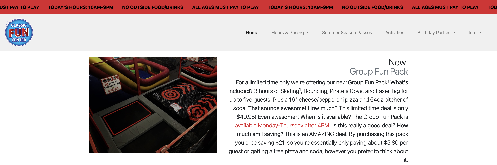

Builder. Leader. Innovator.
I'm a tech-savvy product developer and leader based in Utah, running a high-energy family entertainment center by day and engineering practical software solutions by night. I specialize in solving real business problems with lean, powerful tools—often combining Laravel, low-code platforms, and third-party APIs to streamline operations, save labor, and drive revenue.
I graduated Cum Laude with a degree in Computer Science from Weber State University, and I've led the full development lifecycle on everything from reservation systems to HR automation—all designed specifically for the needs of our business.
Outside of work, I’m into hands-on hobbies like raising chickens, beekeeping, DIY projects, and amateur astronomy. I also enjoy playing basketball and pickleball, learning guitar, gaming, and hanging out with my wife.
I designed and implemented a fully custom HRIS tailored to our entertainment center’s operations—without relying on expensive off-the-shelf software. The system uses Google Forms and Sheets as a flexible backend for applicant tracking, with AppSheet providing a user-friendly interface for managers to view employee personnel files, keep notes, record training, and store files.
This solution eliminated manual tracking, streamlined hiring, and cut down onboarding time dramatically—while keeping costs near zero and giving us full control over the process.

Fuchsia is a fully custom reservation system I built to streamline party and event bookings across our entertainment center. Built with Laravel and Filament, it handles the complexities of multiple rooms, booking durations, and overlapping schedules with precision and flexibility.

I designed and built two customer-facing websites for our entertainment properties: Classic Fun Center and Classic Waterslides. These sites act as the digital front doors for our business, giving guests the ability to view hours, pricing, activities, FAQs, and contact information, as well as book parties and purchase season passes.

I developed a lightweight, modern season pass management tool to replace an outdated legacy system that was inefficient and error-prone. The new system streamlines both the customer-facing purchase experience and the staff-side management process, using modern web technologies to eliminate bottlenecks.
In response to COVID-19 and the need to reduce crowding at our snack bar, I built a mobile-friendly online ordering system over a single weekend using WordPress. The goal: eliminate lines, streamline food prep, and improve customer confidence in our health protocols.
My first custom system for Classic was a homegrown time clock tool designed to streamline payroll processing. Before we adopted Square's built-in time tracking, my solution saved hours each pay period by digitizing clock-ins and exports. While it's since been deprecated, it laid the groundwork for how we manage employee time today.
As we transitioned to Square, I extended their functionality by building a real-time clock-in monitor for managers. Square lacked a quick way to see who was currently clocked in, so I created a live dashboard that runs on a monitor in the office.